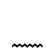
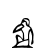
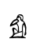
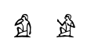

horizontal lines
horizontal lines
A line can be drawn with the construct "{lnumber,number}".
The first number is the start position, the second is the ending position.
The unit is 1/200th of the width of a  sign
sign
The letter can be either 'l' or "L", for a thin or bold line
 {l200,800}
{l200,800}
 {L200,800}
{L200,800}
Tabulation
tabulation is indicated by "?number"; the number is expressed in 1/200th of the size of an  sign.
Exempli gratia : to align our examples, we use "?800" :
 ?800+lan example
?800+lan example
 an example
an example
the  sign should appear after the  below :
sign should appear after the  below :
 ?400-A1-?100-A2-
?400-A1-?100-A2-
